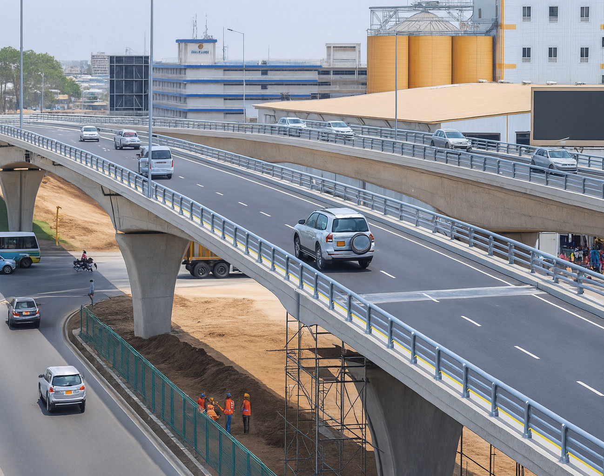
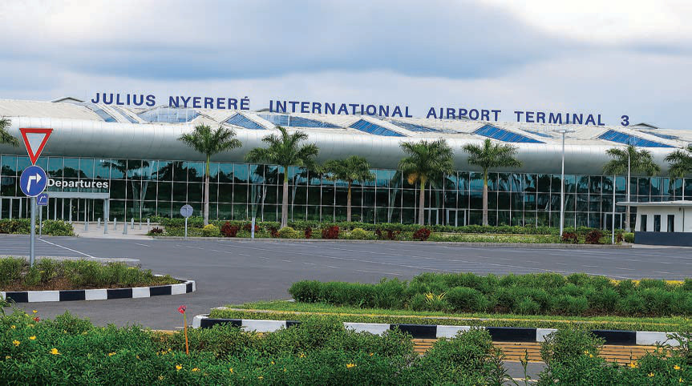

global markets. Land resources also contribute to the transportation sector by constructing roads, railways, and airports, thus improving the country’s overall transportation infrastructure, as shown in Figures, 11, 12 and 13.

Figure 11: Mfugale bridge in Dar es Salaam

Figure 12: Julius Nyerere International Airport in Dar es Salaam